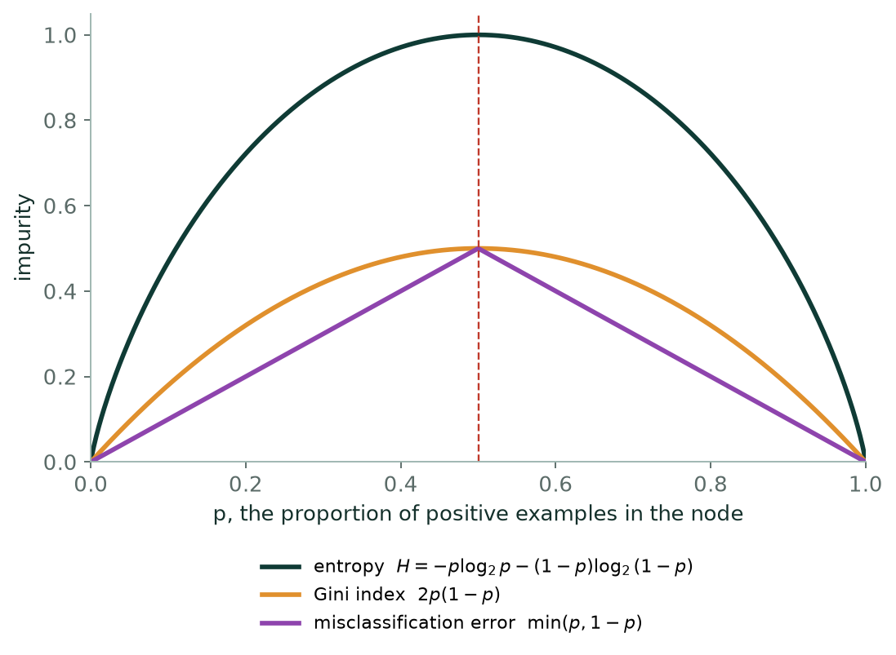
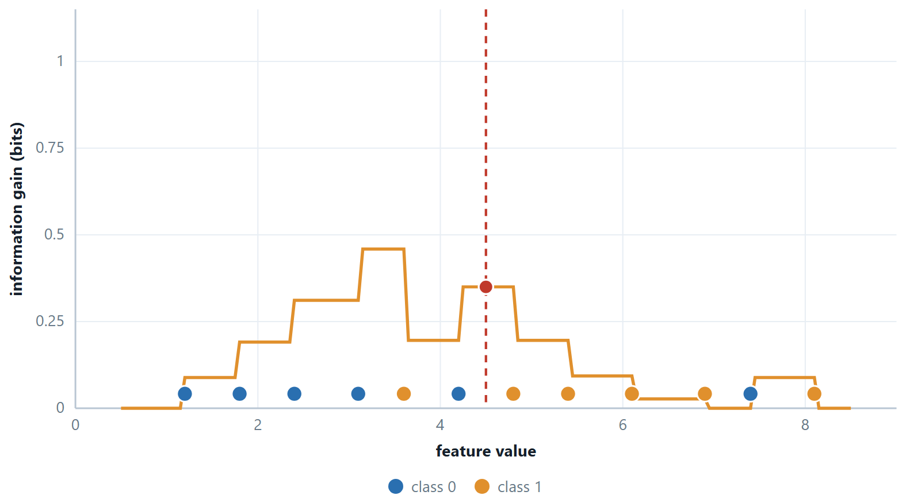
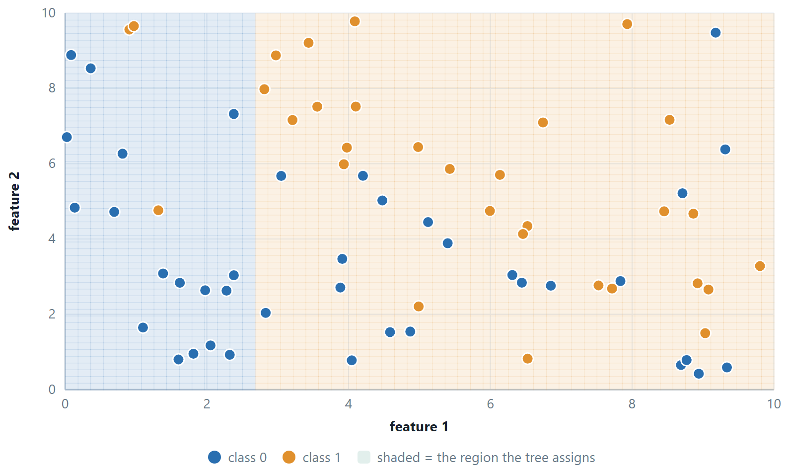
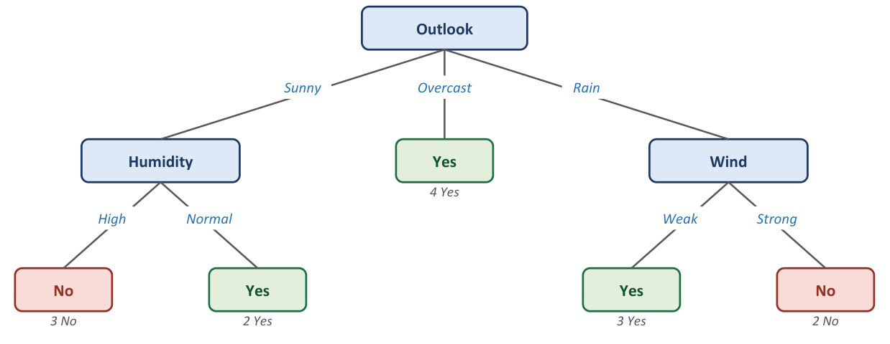

Chapter 6: Decision Trees¶
Unit 3 predicted a number. The model was a surface passing through the data. Here the answer is a category instead, so the model is a fence. It cuts the feature space into regions and labels each one. That fence has a name — the decision boundary — and every algorithm in this unit is one way of drawing it.
Read the unit as a chain of complaints and answers. A decision tree cuts the space into boxes. You can read its rules aloud, and it overfits badly. Naïve Bayes just counts and multiplies. It is almost free to train, and it rests on an assumption that is plainly false. Logistic regression draws one straight boundary and hands you a probability you can trust. k-NN builds no model at all; it looks at the neighbours. The perceptron is the simplest thing that learns a boundary, and it cannot do XOR. The multilayer perceptron can, but you can no longer see how. And the SVM asks a sharper question: which straight boundary? The one with the widest empty corridor around it.
Then come the last two lectures, and they matter more than any single algorithm: how to tell whether a classifier is any good. Take a dataset where 99 cases in 100 are negative. There, accuracy is worse than useless. Knowing why is what separates somebody who can run scikit-learn from somebody who can be trusted with a model.
Learning outcomes of Unit 4
- Compute entropy, Gini and information gain, choose a split the way ID3 does, and explain why a deep tree overfits and how pruning stops it.
- Apply naïve Bayes to a table, explain what the independence assumption buys and costs, and repair the zero-frequency problem with Laplace smoothing.
- Derive logistic regression from linear regression, explain why squared error is replaced by log-loss, and locate its decision boundary.
- Classify with k-NN by hand and describe how \(k\) moves the model along the bias–variance axis.
- Run the perceptron update rule, state its convergence theorem, and say precisely what it cannot do.
- Carry out a forward pass and one step of back-propagation through a small network, and explain the vanishing-gradient problem from the shape of \(\sigma '\).
- State the SVM objective, compute a margin, identify support vectors, and explain the roles of \(C\) and the kernel trick.
- Handle more than two classes: one-vs-rest, one-vs-one and softmax with cross-entropy, and the difference between macro, micro and weighted averaging.
- Build a confusion matrix and compute every metric from it; read a ROC curve; and choose a metric from the cost of each kind of mistake.
6.1 The classification problem¶
Definition: Classification and the decision boundary
Given examples (x, y) with \(y\) drawn from a finite set of classes, learn a map from feature vectors to classes. The decision boundary is the surface in feature space where the predicted class changes. Binary classification has two classes; multi-class has more; multi-label allows several at once.
Most algorithms produce a score rather than a class — a probability, a distance from a boundary, a vote count — and a threshold turns the score into a decision. Keeping that distinction in mind explains most of the evaluation section at the end: the model and the threshold are separate choices, and they can be changed separately.
| Boundary shape | What it gives you |
|---|---|
| Decision tree — axis-parallel steps; a staircase | Rules a human can read out loud |
| Naïve Bayes — quadratic in general, linear for shared variances | A probability, badly calibrated but well ranked |
| Logistic regression — one straight line (hyperplane) | A genuinely calibrated probability |
| k-NN — arbitrarily wiggly, decided by the points themselves | No model at all; the data is the model |
| Perceptron — one straight line, and nothing else | A boundary, with no probability |
| MLP — as curved as the hidden layer allows | High accuracy, low interpretability |
| SVM — straight, or curved via a kernel | The widest possible margin, and sparsity |
6.2 Decision trees¶
A decision tree is the game of twenty questions. Ask the question that tells you the most, split the examples on the answer, and repeat on each part until the group in front of you is all one class. The result is a set of if–then rules you can read aloud to somebody who has never heard of machine learning — which is why trees survive in credit scoring and medicine long after more accurate models exist.
The only technical question is what “tells you the most” means, and information theory answers it.
Definition: Entropy
For a set \(S\) with class proportions \(p_{1}\ldots p_{c}\),
\(H(S) = - \sum p_{i} \log_{2} p_{i}\)
measured in bits: the average number of yes/no questions needed to name the class of a randomly drawn member. \(H = 0\) for a pure set; \(H = 1\) bit for a 50/50 binary split; \(H = \log_{2}c\) for \(c\) equally likely classes.

information gain: the impurity before the split, minus the weighted average impurity after it
The weights are what stop the tree from loving useless splits. A split that peels off one lonely example gives a perfectly pure child — but that child carries a weight of 1/m, so almost nothing is gained. ID3 computes the gain for every attribute, takes the largest, and recurses on each branch, stopping when a node is pure, when attributes run out, or when a depth limit is hit.

Gain has a bias, and C4.5 fixes it
Plain information gain prefers attributes with many values. An ID column splits every example into its own pure branch, so its gain is maximal and its usefulness is nil. C4.5 divides the gain by the entropy of the split itself — the gain ratio — which penalises attributes that fragment the data. CART sidesteps the issue by making only binary splits.
Why trees overfit, and what to do¶
Left alone, a tree grows until every leaf is pure, which for noisy data means one leaf per noisy point. Training accuracy reaches 100% and test accuracy falls. The tree has a very large hypothesis space and no built-in preference for simplicity, so it needs one imposed from outside.
- Pre-pruning (early stopping): a maximum depth, a minimum number of samples to split, a minimum gain. Cheap, and it can stop just before a split that would have been valuable.
- Post-pruning: grow the full tree, then remove subtrees whose removal does not hurt validation accuracy — reduced-error pruning. More expensive and usually better, since it judges a subtree by what it contributed rather than by a guess made before growing it.
# a decision tree, and the rules it learned — read them out loud
from sklearn.tree import DecisionTreeClassifier, export_text
tree = DecisionTreeClassifier(criterion="entropy", max_depth=3,
random_state=42).fit(X_tr, y_tr)
print(export_text(tree, feature_names=list(feature_names)))
print(dict(zip(feature_names, tree.feature_importances_.round(3))))
print("train", tree.score(X_tr, y_tr), "test", tree.score(X_te, y_te))
# training and test accuracy as the tree is allowed to grow deeper
for d in range(1, 12):
t = DecisionTreeClassifier(max_depth=d, random_state=42).fit(X_tr, y_tr)
print(d, round(t.score(X_tr, y_tr), 3), round(t.score(X_te, y_te), 3))
No scaler anywhere, deliberately — a tree does not need one. Note random_state: ties between equally good splits are broken at random, so without it the tree changes between runs.

A tree for a boolean function¶
Any boolean function can be written as a decision tree, and drawing one is a common exam question. Write the truth table, choose the variable that makes the largest branch pure, and the tree usually falls out in two or three tests.
Example 6.1: \(A \lor (B \land\) C)
Problem. Draw a decision tree representing \(A \lor (B \land\) C), and justify the choice of root by information gain.
Step 1 — the truth table
| A | B | \(C\) | Output |
|---|---|---|---|
| 0 | 0 | 0 | 0 |
| 0 | 0 | 1 | 0 |
| 0 | 1 | 0 | 0 |
| 0 | 1 | 1 | 1 |
| 1 | 0 | 0 | 1 |
| 1 | 0 | 1 | 1 |
| 1 | 1 | 0 | 1 |
| 1 | 1 | 1 | 1 |
Five true, three false, so \(H(S) = -(5/8)\log_{2}(5/8) - (3/8)\log_{2}(3/8) = 0.9544\) bits.
Step 2 — which variable to test first
A: the \(A = 1\) branch holds 4 rows, all true — entropy 0. The \(A = 0\) branch holds 4 rows, 1 true and 3 false — entropy 0.8113. Remainder \(=\) ½(0) + ½(0.8113) \(= 0.4056\), so Gain(A) \(= 0.5488\) bits.
B (and by symmetry \(C\)): each branch holds 4 rows, one with 3 true and 1 false and the other with 2 true and 2 false. Remainder \(=\) ½(0.8113) + ½(1.0000) \(= 0.9056\), so Gain(B) \(=\) Gain(C) \(= 0.0488\) bits.
A wins by more than a factor of ten, because it is the only variable that produces a pure branch.
Step 3 — the tree
[A]
0 / \ 1
/ \
[B] TRUE
0 / \ 1
/ \
FALSE [C]
0 / \ 1
/ \
FALSE TRUE
When \(A = 1\) the disjunction is already satisfied, so nothing else need be tested. When \(A = 0\) the function reduces to \(B \land\) C, which needs both.
The same method on the other two you may be asked
\(A \land (B \lor\) C): test A; \(A = 0 \to\) FALSE; \(A = 1 \to\) test B, and if \(B = 0\) test \(C\). Gain(A) is again 0.5488 bits, for the mirror-image reason.
\(A \oplus\) B (XOR): no single variable has any gain at all — each branch is 2 true and 2 false, so the remainder equals \(H(S)\) and the gain is exactly 0. The tree still exists (test A, then B on both branches), but a greedy criterion cannot see which variable to pick, so it takes an arbitrary one. This is the standard example of why pre-pruning on a minimum-gain threshold is dangerous: the useful split lies one level below a useless one.
Answer. Test A first — Gain(A) \(= 0.5488\) bits against 0.0488 for B or \(C\)
6.3 Further topics¶
Gain ratio and split information¶
Information gain can only go up as an attribute splits the data into more and smaller groups, which is why it favours many-valued attributes. C4.5 corrects this by dividing the gain by the split information, the entropy of the branch sizes alone:
The denominator takes simple values that are worth remembering. A two-way split into equal halves has SplitInfo \(= 1\), so the ratio equals the gain. A split into \(n\) equal groups has SplitInfo \(= \log_{2} n\), so an identifier column that puts every one of \(m\) examples into its own branch pays a penalty of \(\log_{2} m\) however perfect its purity. A very lopsided split has a small SplitInfo, which can make the ratio large for a split that is nearly useless, so C4.5 only ranks by gain ratio the attributes whose gain is at least the average of the candidates.
Numeric attributes and binary tests¶
A numeric attribute is turned into a yes/no question \(x \le t\). The values present in the node are sorted, and the candidate thresholds are the midpoints between neighbours whose class labels differ; a cut inside a run of one class never improves purity. Each candidate is scored with the same gain (or Gini reduction) as an ordinary split, and the best one stands for the attribute. Because the question is binary, the same numeric attribute may be tested again further down with a different threshold, which is how a tree approximates a smooth, increasing relationship by a staircase.
CART takes this idea further and makes every test binary. A categorical attribute with \(v\) values is divided into two groups of values, and there are \(2^{v-1} - 1\) ways to do it: 3 for three values, 15 for five, 31 for six. CART scores each with the Gini index. It can also grow a regression tree, in which a leaf predicts the mean target value of its examples and the impurity of a node is the variance of its targets.
ID3, C4.5 and CART side by side¶
| ID3 | C4.5 | CART | |
|---|---|---|---|
| Split criterion | information gain | gain ratio | Gini index (or variance for regression) |
| Branching | one branch per value | one branch per value, or a threshold | always two branches |
| Numeric attributes | not handled | thresholds \(x \le t\) | thresholds \(x \le t\) |
| Missing values | not handled | handled | surrogate splits |
| Task | classification | classification | classification and regression |
| Controls overfitting by | stopping rules | post-pruning | cost-complexity pruning |
Cost-complexity pruning¶
Reduced-error pruning needs a validation set to judge each subtree. Cost-complexity (weakest-link) pruning, used by CART, instead scores a tree \(T\) with a single number that charges for its size:
With \(\alpha = 0\) the full tree wins, because it has the smallest training error. As \(\alpha\) grows, a subtree that buys little accuracy for its leaves becomes too expensive and is collapsed into a single leaf; for large \(\alpha\) only the root survives. Cutting a subtree \(t\) is worthwhile once \(\alpha\) exceeds
the extra error per leaf saved. The subtree with the smallest \(g\) is the weakest link and goes first; \(\alpha\) itself is then chosen by cross-validation.
A small check on the ten students of the worked examples shows the mechanism. Grow a tree that tests Attendance and then splits the Medium group (R03 with 3.5 hours, R05 with 4.5 and R07 with 6.0) at 5.25 hours. It has 4 leaves and makes no training error. Collapsing the Medium subtree to the leaf Fail makes one error in ten, so \(g = (0.1 - 0)/(2 - 1) = 0.1\). Collapsing the root of the full tree instead would leave the majority error of \(0.5\), so \(g = (0.5 - 0)/(4 - 1) = 0.167\), which is larger, so the Medium subtree is the weakest link. Once it has gone, the three-leaf tree costs \(0.1 + 3\alpha\) and the one-leaf tree \(0.5 + \alpha\), which are equal at \(\alpha = 0.2\). So the full tree is best for \(\alpha < 0.1\), the three-leaf tree for \(0.1 < \alpha < 0.2\), and the single leaf beyond that.
6.4 Worked examples¶
The examples below work through the calculations of this chapter in full. Try each one on paper before reading the steps.
Example 6.2: Information gain, from counts to a decision
Problem. A node has 9 positive and 5 negative examples. Attribute Wind splits it into Weak (6+, 2−) and Strong (3+, 3−). Compute the information gain, and compare it with an attribute that splits into (9+, 0−) and (0+, 5−).
Step 1 — the parent
\(p_{+} = 9/14 = 0.643, p_{-} = 5/14 = 0.357\)
\(H = -0.643 \log_{2}0.643 - 0.357 \log_{2}0.357 =\) −0.643(−0.637) \(- 0.357(-1.485)\)
\(= 0.410 + 0.530 = 0.940\) bits
Step 2 — the children
Weak: \(6+ 2-, p = 0.75\). \(H = -0.75 \log_{2}0.75 - 0.25 \log_{2}0.25 = 0.311 + 0.5 = 0.811\)
Strong: \(3+ 3-, p = 0.5\). \(H = 1.000\) — a perfectly mixed node, the worst possible.
Step 3 — weighted average, then subtract
Weights: \(8/14 = 0.571\) and \(6/14 = 0.429\)
\(H(\text{after}) = 0.571(0.811) + 0.429(1.000) = 0.463 + 0.429 = 0.892\)
Gain \(= 0.940 - 0.892 = 0.048\) bits
Step 4 — the perfect split, for contrast
Both children are pure, so both entropies are 0 and \(H(\text{after}) = 0\).
Gain \(= 0.940 - 0 = 0.940\) bits — the entire entropy of the parent, which is the maximum any split can achieve.
Answer. Wind gains 0.048 bits; the perfect split gains 0.940. ID3 chooses the latter.
Comment. 0.048 bits is a poor split, and the reason is visible in the children: Wind \(=\) Strong is 3+ 3−, which is exactly as uninformative as knowing nothing. A split is only worth having if at least one branch is purer than what you started with.
The first example grows a complete tree, which the chapter has so far only started. The three that follow use other data sets to bring in the remaining ideas: the Gini index with binary splits, a numeric attribute that needs a threshold, and the gain ratio that stops an identifier column from winning.
Example 6.3: Growing the whole ID3 tree on the PlayTennis data
Problem. Fourteen days are recorded with the weather and whether tennis was played. Use ID3 with information gain to build the complete tree, and write down the rules it encodes.
| Day | Outlook | Temperature | Humidity | Wind | Play |
|---|---|---|---|---|---|
| D1 | Sunny | Hot | High | Weak | No |
| D2 | Sunny | Hot | High | Strong | No |
| D3 | Overcast | Hot | High | Weak | Yes |
| D4 | Rain | Mild | High | Weak | Yes |
| D5 | Rain | Cool | Normal | Weak | Yes |
| D6 | Rain | Cool | Normal | Strong | No |
| D7 | Overcast | Cool | Normal | Strong | Yes |
| D8 | Sunny | Mild | High | Weak | No |
| D9 | Sunny | Cool | Normal | Weak | Yes |
| D10 | Rain | Mild | Normal | Weak | Yes |
| D11 | Sunny | Mild | Normal | Strong | Yes |
| D12 | Overcast | Mild | High | Strong | Yes |
| D13 | Overcast | Hot | Normal | Weak | Yes |
| D14 | Rain | Mild | High | Strong | No |
Step 1 — entropy of the whole set
Nine Yes and five No, so \(p_{+} = 9/14 = 0.6429\) and \(p_{-} = 5/14 = 0.3571\).
\(H(S) = -(0.6429)(-0.6374) - (0.3571)(-1.4854) = 0.4098 + 0.5305 = 0.9403\) bits
Step 2 — the gain of every attribute at the root
Outlook splits the days into Sunny (2+, 3−), Overcast (4+, 0−) and Rain (3+, 2−). The Sunny and Rain nodes both have entropy \(-(2/5)\log_{2}(2/5) - (3/5)\log_{2}(3/5) = 0.9710\), and Overcast is pure.
\(H(\text{after}) = (5/14)(0.9710) + (4/14)(0) + (5/14)(0.9710) = 0.3468 + 0 + 0.3468 = 0.6935\)
\(\text{Gain}(\text{Outlook}) = 0.9403 - 0.6935 = 0.2467\)
The other three attributes are worked in the same three lines:
| Attribute | Branches (Yes, No) | Child entropies | Weighted entropy | Gain |
|---|---|---|---|---|
| Outlook | Sunny (2, 3), Overcast (4, 0), Rain (3, 2) | 0.9710, 0, 0.9710 | 0.6935 | 0.2467 |
| Humidity | High (3, 4), Normal (6, 1) | 0.9852, 0.5917 | 0.7885 | 0.1518 |
| Wind | Weak (6, 2), Strong (3, 3) | 0.8113, 1.0000 | 0.8922 | 0.0481 |
| Temperature | Hot (2, 2), Mild (4, 2), Cool (3, 1) | 1.0000, 0.9183, 0.8113 | 0.9111 | 0.0292 |
Outlook has the largest gain, so it is the root.
Step 3 — the Overcast branch
D3, D7, D12 and D13 are all Yes. The node is pure, so it becomes a leaf labelled Yes.
Step 4 — the Sunny branch
The node holds D1, D2, D8, D9 and D11: two Yes and three No, entropy 0.9710. Outlook is used up on this path, so only the other three attributes compete.
- Humidity: High \(= \{\)D1, D2, D8\(\}\) is (0+, 3−) and Normal \(= \{\)D9, D11\(\}\) is (2+, 0−). Both are pure, so the weighted entropy is 0 and the gain is \(0.9710 - 0 = 0.9710\), the most any split of this node could achieve.
- Temperature: Hot (0, 2) and Cool (1, 0) are pure, Mild \(= \{\)D8, D11\(\}\) is (1, 1) with entropy 1. Weighted \(= (2/5)(1) = 0.4000\), gain \(= 0.5710\).
- Wind: Weak (1, 2) has entropy 0.9183 and Strong (1, 1) has 1. Weighted \(= (3/5)(0.9183) + (2/5)(1) = 0.9510\), gain \(= 0.0200\).
Humidity wins and both of its branches are pure leaves: High gives No and Normal gives Yes.
Step 5 — the Rain branch
The node holds D4, D5, D6, D10 and D14: three Yes and two No, entropy 0.9710.
- Wind: Weak \(= \{\)D4, D5, D10\(\}\) is (3, 0) and Strong \(= \{\)D6, D14\(\}\) is (0, 2). Both are pure, so the gain is 0.9710.
- Temperature and Humidity each leave a weighted entropy of 0.9510, so each has a gain of only 0.0200.
Wind wins: Weak gives Yes and Strong gives No.
Step 6 — the finished tree and its rules

R1: IF Outlook = Overcast THEN Play = Yes
R2: IF Outlook = Sunny AND Humidity = High THEN Play = No
R3: IF Outlook = Sunny AND Humidity = Normal THEN Play = Yes
R4: IF Outlook = Rain AND Wind = Weak THEN Play = Yes
R5: IF Outlook = Rain AND Wind = Strong THEN Play = No
Answer. Root Outlook (gain 0.2467); Sunny splits on Humidity, Rain splits on Wind, Overcast is a leaf. The tree has depth 2, three internal nodes and five leaves, and classifies all 14 training days correctly.
Comment. Temperature is never used: once Outlook is known it adds nothing. At the Rain node, Temperature and Humidity tie at 0.0200; a tie means that neither attribute is informative there, and ID3 breaks it arbitrarily. The 100% training accuracy is no evidence that the tree will do well on new days, which is the point of the pruning discussion above.
Example 6.4: The Gini index and CART's binary splits
Problem. For the buys_computer data below, compute the Gini index of the whole set, evaluate every binary split of every attribute, and decide which split CART puts at the root.
| RID | Age | Income | Student | Credit rating | Buys computer |
|---|---|---|---|---|---|
| 1 | youth | high | no | fair | no |
| 2 | youth | high | no | excellent | no |
| 3 | middle-aged | high | no | fair | yes |
| 4 | senior | medium | no | fair | yes |
| 5 | senior | low | yes | fair | yes |
| 6 | senior | low | yes | excellent | no |
| 7 | middle-aged | low | yes | excellent | yes |
| 8 | youth | medium | no | fair | no |
| 9 | youth | low | yes | fair | yes |
| 10 | senior | medium | yes | fair | yes |
| 11 | youth | medium | yes | excellent | yes |
| 12 | middle-aged | medium | no | excellent | yes |
| 13 | middle-aged | high | yes | fair | yes |
| 14 | senior | medium | no | excellent | no |
Step 1 — Gini index of the whole set
Nine yes and five no:
\(\text{Gini}(D) = 1 - (9/14)^{2} - (5/14)^{2} = 1 - 0.4133 - 0.1276 = 0.4592\)
Step 2 — list the candidate splits
CART tests only two-way splits. An attribute with \(v\) values can be divided into two groups in \(2^{v-1} - 1\) ways, so Age and Income (three values each) give 3 splits apiece, and Student and Credit rating (two values) give 1 apiece: eight candidates in all.
Step 3 — one split in full: Age, {middle-aged} against {youth, senior}
Left (RID 3, 7, 12, 13): 4 yes, 0 no, so \(\text{Gini} = 1 - 1 - 0 = 0\).
Right (the other 10 rows): 5 yes, 5 no, so \(\text{Gini} = 1 - 0.5^{2} - 0.5^{2} = 0.5000\).
\(\text{Gini}_{\text{split}} = (4/14)(0) + (10/14)(0.5000) = 0.3571\)
Reduction \(= 0.4592 - 0.3571 = 0.1020\)
Step 4 — all eight splits
| Split (left group against the rest) | Left (yes, no) | Right (yes, no) | Gini of left, right | Weighted Gini | Reduction |
|---|---|---|---|---|---|
| Age in | (4, 0) | (5, 5) | 0.0000, 0.5000 | 0.3571 | 0.1020 |
| Student = no | (3, 4) | (6, 1) | 0.4898, 0.2449 | 0.3673 | 0.0918 |
| Age in | (2, 3) | (7, 2) | 0.4800, 0.3457 | 0.3937 | 0.0655 |
| Credit = excellent | (3, 3) | (6, 2) | 0.5000, 0.3750 | 0.4286 | 0.0306 |
| Income in | (2, 2) | (7, 3) | 0.5000, 0.4200 | 0.4429 | 0.0163 |
| Income in | (3, 1) | (6, 4) | 0.3750, 0.4800 | 0.4500 | 0.0092 |
| Age in | (3, 2) | (6, 3) | 0.4800, 0.4444 | 0.4571 | 0.0020 |
| Income in | (4, 2) | (5, 3) | 0.4444, 0.4688 | 0.4583 | 0.0009 |
Step 5 — the second level
The {middle-aged} branch is a pure leaf (buys \(=\) yes). The other branch holds 10 rows, 5 yes and 5 no, with Gini 0.5000. Repeating the search on those rows, Student = no gives left (1, 4) and right (4, 1), each with Gini \(1 - 0.8^{2} - 0.2^{2} = 0.32\), so the weighted Gini is 0.3200. The next best candidates, Income in {high} (0.3750) and Credit = excellent (0.4167), are clearly worse, so Student is the second test.
Answer. The root split is Age \(\in \{\text{middle-aged}\}\) (weighted Gini 0.3571, reduction 0.1020), followed on the remaining rows by Student.
Comment. The runner-up, Student, is close (0.3673 against 0.3571). ID3 on the same table, with a three-way split on every attribute, gives information gains of 0.2467 for Age, 0.1518 for Student, 0.0481 for Credit rating and 0.0292 for Income, so it also puts Age at the root. The two criteria usually agree. Never compare a Gini value with an entropy value: for two classes Gini cannot exceed 0.5, whereas entropy reaches 1.
Example 6.5: A numeric attribute and its best threshold
Problem. Ten students are described by the hours they studied and by the result. Find the best binary test of the form \(\text{Hours} \le t\) on the information-gain criterion.
| Student | R01 | R02 | R03 | R04 | R05 | R06 | R07 | R08 | R09 | R10 |
|---|---|---|---|---|---|---|---|---|---|---|
| Hours studied | 1.0 | 2.0 | 3.5 | 4.0 | 4.5 | 5.5 | 6.0 | 7.0 | 8.0 | 9.5 |
| Result | Fail | Fail | Fail | Pass | Fail | Pass | Pass | Fail | Pass | Pass |
Step 1 — entropy of the whole set
Five Pass and five Fail, so \(H(S) = 0.5 + 0.5 = 1.0000\) bit.
Step 2 — which thresholds are worth trying
The values are already sorted. A threshold is placed midway between two neighbouring values, and a cut inside a run of identical labels can never be the best one, so only the places where the label changes are tested:
Hours: 1.0 2.0 3.5 | 4.0 | 4.5 5.5 6.0 | 7.0 | 8.0 9.5
Result: F F F | P | F P P | F | P P
The label changes between 3.5 and 4.0, 4.0 and 4.5, 4.5 and 5.5, 6.0 and 7.0, and 7.0 and 8.0, giving the candidate thresholds \(t = 3.75, 4.25, 5.00, 6.50\) and \(7.50\). (Four of the nine midpoints are skipped.)
Step 3 — one threshold in full: \(t = 3.75\)
Left (\(\text{Hours} \le 3.75\)): 1.0, 2.0, 3.5, which is (0 Pass, 3 Fail), so \(H = 0\).
Right: seven students, (5 Pass, 2 Fail):
\(H = -(5/7)\log_{2}(5/7) - (2/7)\log_{2}(2/7) = 0.3467 + 0.5164 = 0.8631\)
\(H(\text{after}) = (3/10)(0) + (7/10)(0.8631) = 0.6042\)
\(\text{Gain} = 1.0000 - 0.6042 = 0.3958\)
Step 4 — the other four thresholds
| \(t\) | Left (Pass, Fail) | Right (Pass, Fail) | Left \(H\) | Right \(H\) | Weighted \(H\) | Gain |
|---|---|---|---|---|---|---|
| 3.75 | (0, 3) | (5, 2) | 0.0000 | 0.8631 | 0.6042 | 0.3958 |
| 4.25 | (1, 3) | (4, 2) | 0.8113 | 0.9183 | 0.8755 | 0.1245 |
| 5.00 | (1, 4) | (4, 1) | 0.7219 | 0.7219 | 0.7219 | 0.2781 |
| 6.50 | (3, 4) | (2, 1) | 0.9852 | 0.9183 | 0.9651 | 0.0349 |
| 7.50 | (3, 5) | (2, 0) | 0.9544 | 0.0000 | 0.7635 | 0.2365 |
Answer. The best test is \(\text{Hours} \le 3.75\), with a gain of 0.3958 bits.
Comment. The skipped midpoints cannot beat it: those at 1.5, 2.75, 5.75 and 8.75 give gains of 0.1080, 0.2365, 0.1245 and 0.1080. The Gini index agrees about the winner, since the weighted Gini of the 3.75 cut is \((7/10)(0.4082) = 0.2857\), against 0.3200 for the next best, 5.00. Once the best cut is found, the whole numeric attribute is represented by that one yes/no question when it competes with the categorical attributes, and, unlike a categorical attribute, it may be tested again lower in the tree with a different threshold.
Example 6.6: The gain ratio and the identifier column
Problem. The ten students of the last example also have a roll number and an attendance level (Low, Medium or High). The attendance and result columns are:
| Student | R01 | R02 | R03 | R04 | R05 | R06 | R07 | R08 | R09 | R10 |
|---|---|---|---|---|---|---|---|---|---|---|
| Attendance | Low | Low | Medium | High | Medium | High | Medium | Low | High | High |
| Result | Fail | Fail | Fail | Pass | Fail | Pass | Pass | Fail | Pass | Pass |
Compute the information gain and the gain ratio of RollNo, Attendance and the threshold test \(\text{Hours} \le 3.75\) from the last example. Which attribute does plain information gain choose, and which does C4.5?
Step 1 — the formulas
SplitInfo is the entropy of the sizes of the branches, ignoring the classes. The more branches, the larger it is.
Step 2 — Attendance
Low \(= \{\)R01, R02, R08\(\}\) is (0 Pass, 3 Fail), so \(H = 0\). High \(= \{\)R04, R06, R09, R10\(\}\) is (4, 0), so \(H = 0\). Medium \(= \{\)R03, R05, R07\(\}\) is (1, 2), so \(H = 0.9183\).
\(H(\text{after}) = (3/10)(0) + (3/10)(0.9183) + (4/10)(0) = 0.2755\)
\(\text{Gain} = 1.0000 - 0.2755 = 0.7245\)
\(\text{SplitInfo} = -(0.3)\log_{2}0.3 - (0.3)\log_{2}0.3 - (0.4)\log_{2}0.4 = 0.5211 + 0.5211 + 0.5288 = 1.5710\)
\(\text{GainRatio} = 0.7245 / 1.5710 = 0.4612\)
Step 3 — RollNo, ten branches of one student each
Every branch is pure, so \(H(\text{after}) = 0\) and \(\text{Gain} = 1.0000\), the largest value possible.
\(\text{SplitInfo} = -10 \times (1/10)\log_{2}(1/10) = \log_{2}10 = 3.3219\)
\(\text{GainRatio} = 1.0000 / 3.3219 = 0.3010\)
Step 4 — the threshold test
From the last example, Gain \(= 0.3958\). The two branches hold 3 and 7 students:
\(\text{SplitInfo} = -(0.3)\log_{2}0.3 - (0.7)\log_{2}0.7 = 0.5211 + 0.3602 = 0.8813\)
\(\text{GainRatio} = 0.3958 / 0.8813 = 0.4491\)
Step 5 — compare
| Attribute | Branches | Gain | SplitInfo | Gain ratio |
|---|---|---|---|---|
| RollNo | 10 | 1.0000 | 3.3219 | 0.3010 |
| Attendance | 3 | 0.7245 | 1.5710 | 0.4612 |
| \(\text{Hours} \le 3.75\) | 2 | 0.3958 | 0.8813 | 0.4491 |
Answer. Information gain would choose RollNo, giving a ten-leaf tree that is perfect on the training set and useless on a new student. C4.5 chooses Attendance (gain ratio 0.4612).
Comment. Gain ratio has a weakness of its own: when SplitInfo is tiny, the ratio becomes huge for a nearly useless split. C4.5 therefore considers only attributes whose gain is at least the average over the candidates (here \((1.0000 + 0.7245 + 0.3958)/3 = 0.7068\)) and ranks those by gain ratio. That rule removes the threshold test, leaving RollNo and Attendance, and Attendance wins on ratio. In a real project the simplest remedy is to delete identifier columns before training.
6.5 Common mistakes to avoid¶
Each of the following is a mistake that costs marks in an examination or accuracy in practice.
- Do not use ln when the question says entropy in bits. Divide by ln 2, or use \(\log_{2}\) directly. A two-class entropy above 1 is always this error.
- Do not forget the weights in information gain. The child entropies are averaged in proportion to how many examples went each way.
6.6 Summary¶
After working through this chapter you should be able to do the following.
- Compute entropy, Gini and information gain from counts, and choose a split the way ID3 does. You can explain why gain is biased towards many-valued attributes, and what the gain ratio does about it. You can describe both kinds of pruning, and the overfitting they exist to stop.
6.7 Exercises¶
-
A node has 12 positive and 4 negative examples. Compute its entropy and Gini index.
Answer
With \(p_{+} = 0.75\) and \(p_{-} = 0.25\):
\(H = -0.75\log_{2}0.75 - 0.25\log_{2}0.25 = 0.3113 + 0.5000 = 0.8113\) bits
\(\text{Gini} = 1 - 0.75^{2} - 0.25^{2} = 1 - 0.5625 - 0.0625 = 0.375\)
-
A split gives (8+, 0−) and (4+, 4−) from that node. Compute the information gain.
Answer
The first child is pure, \(H = 0\). The second is an even mix, \(H = 1\). The weights are \(8/16\) each, so
\(H(\text{after}) = 0.5(0) + 0.5(1) = 0.5\)
\(\text{Gain} = 0.8113 - 0.5 = 0.3113\) bits
-
Why does plain information gain prefer an attribute with 50 distinct values, and what does C4.5 do about it?
Answer
Splitting on many values produces many small groups, and small groups are pure by chance. If the attribute is an identifier (50 values for 50 examples) every branch holds a single example, every child has entropy 0, the remainder is 0 and the gain equals the whole entropy of the node, the largest value any attribute can reach. The tree would have 50 leaves, fit the training set perfectly and generalise to nothing.
C4.5 divides the gain by the split information, the entropy of the branch sizes. For 50 equal singleton branches this is \(\log_{2}50 = 5.64\) bits, so the gain ratio is only \(H(S)/5.64\), while an honest two-way split has a split information of at most 1 and loses nothing. C4.5 also ranks by gain ratio only the attributes whose gain is at least average, because the ratio can be inflated when the split information is very small. CART avoids the problem differently, by allowing only binary splits.
-
A node has 10 examples, 6 positive and 4 negative. The attribute Wind splits it into Weak (4+, 1−) and Strong (2+, 3−). Compute the parent entropy, the information gain, and then the same split's gain under the Gini index.
Answer
Entropy: \(H(\text{parent}) = 0.9710\), \(H(\text{Weak}) = 0.7219\), \(H(\text{Strong}) = 0.9710\). The weights are \(5/10\) each, so \(H(\text{after}) = 0.5(0.7219) + 0.5(0.9710) = 0.8464\) and the gain is \(0.9710 - 0.8464 \approx 0.1245\) bits (0.1245 from unrounded values).
Gini: parent \(1 - 0.6^{2} - 0.4^{2} = 0.48\); Weak \(1 - 0.8^{2} - 0.2^{2} = 0.32\); Strong \(1 - 0.4^{2} - 0.6^{2} = 0.48\). Weighted \(= 0.5(0.32) + 0.5(0.48) = 0.40\), so the Gini reduction is \(0.48 - 0.40 = 0.08\).
Both criteria call the split worthwhile but modest. The two numbers (0.1245 and 0.08) are on different scales and must not be compared with each other.
-
Five people are recorded with their age group, whether they are students and whether they bought the product.
Person Age Student Buys 1 Young No No 2 Young Yes Yes 3 Old Yes Yes 4 Old No No 5 Middle Yes Yes Compute the information gain of splitting on Age and on Student. Which does ID3 choose for the root?
Answer
Three Yes and two No: \(H(S) = 0.9710\).
Age: Young is (1+, 1−) with \(H = 1\); Old is (1+, 1−) with \(H = 1\); Middle is (1+, 0−) with \(H = 0\). \(H(\text{after}) = (2/5)(1) + (2/5)(1) + (1/5)(0) = 0.8\), so \(\text{Gain}(\text{Age}) = 0.9710 - 0.8 = 0.1710\).
Student: Yes holds persons 2, 3, 5, all of whom buy, and No holds persons 1 and 4, neither of whom buys. Both children are pure, so \(H(\text{after}) = 0\) and \(\text{Gain}(\text{Student}) = 0.9710\).
ID3 chooses Student, which classifies all five people correctly with one test.
-
A data set has 10 positive and 6 negative examples. (a) Compute its entropy. (b) Node X holds 12 Yes and 0 No; node Y holds 6 Yes and 6 No. Compute their entropies and say which is pure and which is maximally impure.
Answer
(a) \(p_{+} = 0.625\), \(p_{-} = 0.375\): \(H = 0.625(0.6781) + 0.375(1.4150) = 0.4238 + 0.5306 = 0.9544\) bits.
(b) \(H(X) = 0\), since one class has probability 1 and \(0 \log_{2} 0\) is taken as 0; node X is pure. \(H(Y) = 1\) bit, the maximum for two classes; node Y is maximally impure.
-
Attribute X splits a set into three pure subsets. Attribute Y splits the same set into three impure subsets. Without computing anything, say which attribute ID3 selects, and why.
Answer
X. The weighted average of the child entropies is zero for X, since every child is pure, so its gain equals the entropy of the parent, the largest gain any split can have. For Y every child has positive entropy, so the weighted average is positive and the gain is strictly smaller. (Unless X is something like an identifier with a branch for every example, in which case gain ratio, not gain, is the fairer judge.)
-
At the Rain node of the PlayTennis tree the five days are as below.
Day Temperature Humidity Wind Play D4 Mild High Weak Yes D5 Cool Normal Weak Yes D6 Cool Normal Strong No D10 Mild Normal Weak Yes D14 Mild High Strong No Compute the gain of each of the three attributes. Two of them tie; what is the tie telling you?
Answer
The node has 3 Yes and 2 No, \(H = 0.9710\).
Wind: Weak \(= \{\)D4, D5, D10\(\}\) is all Yes and Strong \(= \{\)D6, D14\(\}\) is all No. The weighted entropy is 0 and the gain is 0.9710.
Temperature: Mild (D4, D10, D14) is (2+, 1−) with \(H = 0.9183\), and Cool (D5, D6) is (1+, 1−) with \(H = 1\). Weighted \(= (3/5)(0.9183) + (2/5)(1) = 0.9510\), gain \(0.0200\).
Humidity: High (D4, D14) is (1+, 1−) and Normal (D5, D6, D10) is (2+, 1−), the same two entropies in the same proportions, so the weighted entropy is again 0.9510 and the gain 0.0200.
Temperature and Humidity tie at 0.0200, a gain so small that neither says anything about the outcome at this node; the tie is broken arbitrarily (by column order, say), and the choice does not matter because the winner, Wind, is far better.
-
Ten students studied for the hours shown and either passed or failed.
Hours 1.0 2.0 3.5 4.0 4.5 5.5 6.0 7.0 8.0 9.5 Result F F F P F P P F P P Compute the Gini index of the whole set and the Gini reduction for the tests \(\text{Hours} \le 3.75\) and \(\text{Hours} \le 5.00\). Which test does CART prefer?
Answer
The root has 5 P and 5 F: \(\text{Gini} = 1 - 0.25 - 0.25 = 0.5000\).
\(\text{Hours} \le 3.75\): left is (0 P, 3 F), \(\text{Gini} = 0\); right is (5 P, 2 F), \(\text{Gini} = 1 - (5/7)^{2} - (2/7)^{2} = 0.4082\). Weighted \(= 0.7(0.4082) = 0.2857\), so the reduction is \(0.2143\).
\(\text{Hours} \le 5.00\): left is (1 P, 4 F), \(\text{Gini} = 1 - 0.04 - 0.64 = 0.32\); right is (4 P, 1 F), also 0.32. Weighted \(= 0.32\), so the reduction is \(0.18\).
CART prefers \(\text{Hours} \le 3.75\), the larger reduction, which is also the threshold that maximises information gain on these data.
-
How many different two-way splits of the values can CART consider for a categorical attribute with 3 values? With 5 values? Why can the number of tests for a numeric attribute never exceed the number of distinct values minus one?
Answer
The number is \(2^{v-1} - 1\): for \(v = 3\) it is \(2^{2} - 1 = 3\), and for \(v = 5\) it is \(2^{4} - 1 = 15\). (There are \(2^{v}\) ways to assign each value to the left or the right group, half of them mirror images, and the case with an empty group is excluded.)
For a numeric attribute a test \(x \le t\) only changes which examples go left when \(t\) passes one of the observed values, so the distinct partitions correspond to the gaps between consecutive sorted values. With \(n\) distinct values there are \(n - 1\) gaps, and C4.5 and CART need examine only those where the class label changes.
-
Explain why a tree grown until every leaf is pure usually does badly on new data, name one pre-pruning and one post-pruning remedy, and say how tree depth relates to bias and variance.
Answer
A tree grown to purity carves a small region around every training point, noisy ones included, so it fits the training set perfectly (training accuracy 100% unless two identical examples carry different labels) but has memorised noise. A new example near a noisy point is then misclassified, and test accuracy falls.
Pre-pruning stops growth early: a maximum depth, a minimum number of examples needed to split a node, or a minimum gain. Post-pruning grows the full tree and then removes subtrees, for example reduced-error pruning (remove a subtree if validation accuracy does not fall) or cost-complexity pruning (minimise error plus \(\alpha\) times the number of leaves).
Depth is the tree's bias-variance dial. A shallow tree has high bias and low variance; a deep tree has low bias and high variance. Pruning moves the tree back towards the middle, giving up a little training accuracy for a lot of generalisation.
-
True or false, with a reason: "A decision tree grown until every leaf is pure always generalises well to new data."
Answer
False. Purity of every leaf is perfection on the training set, which for noisy data means the tree has fitted the noise. It overfits (low bias, high variance), and pruning or a depth limit is needed to make it generalise.
-
Entropy and the Gini index usually choose the same attribute. Why is it still wrong to compare a Gini reduction of 0.08 with an information gain of 0.1245 bits, and why do many libraries default to Gini?
Answer
The two measures live on different scales: for two classes the Gini index is at most 0.5 and entropy at most 1 bit, so a number from one is not comparable with a number from the other; only splits scored by the same measure can be ranked against each other. Gini is cheaper because it needs squares where entropy needs logarithms, and in practice the two usually pick the same split, which is why CART and scikit-learn's default (
criterion="gini") use it.